Latest Stories, page 6
Everything we have published, newest first. Opinion, recaps, history, and columns across every Bay Area team.

Adames Grand Slam, Roupp Shutout: Giants Blank the Mariners 7-0 to Open the Second Half
Willy Adames' seventh career grand slam, a Bryce Eldridge homer, and seven shutout innings from Landen Roupp in a statement road win in Seattle.

Nationals 23, A's 4: Oakland Opens the Second Half With an Embarrassing Blowout
Washington hung 23 in West Sacramento, Gage Jump got shelled, Chaparro homered twice. Soderstrom and Langeliers went deep in a wipeout.

Bay Area at the 2026 All-Star Game: Langeliers Reached Twice, Arraez Got One Swing, Webb Never Threw
AL 4, NL 0 in Philadelphia. Langeliers started and reached base twice. Arraez struck out in his lone at-bat. Webb never left the bullpen.

Raiders 2026 Preview: Kubiak, Cousins, and a Rookie Named Mendoza Try to Fix a 3-14 Mess
A Bay Area take on the reset in the desert: new coach, a bridge QB, the No. 1 pick, Jeanty, and a brutal AFC West.

Giants at the All-Star Break: 41-55 and a Rookie Manager Learning on the Job
Fourth in the NL West, 20.5 back. The first-half breakdown, Vitello's rookie half, and the reset coming August 3.

A's at the All-Star Break: 41-55, a Nine-Game Skid, and the Mirage I Warned You About
First place to fourth, eight back, nine straight losses into the break. The first-half breakdown and why the second half gets worse.

Jerry Rice Says This Is the Year the 49ers Break the Super Bowl Drought
"I think this is the year for the Niners." The GOAT called his shot at Lake Tahoe.

Casey Schmitt Is Having an All-Star Breakout Season, Even If the All-Star Game Didn't Notice
19 homers, a .494 slug, a 118 wRC+, and an All-Star case the NL roster ignored.

Tyler Mahle Finally Won a Game, and Casey Schmitt Made Sure It Counted
Seven strong innings, a three-run Schmitt homer, and a 4-2 win over the Rockies.

The Giants Bullpen Finally Held One: Erik Miller Slams the Door in a 3-1 Win
Two straight wins after a brutal opener, and for once the ninth inning was boring. Adames three hits, McDonald seven.

I Told You the A's Were a Mirage
Nine straight losses, 9-1 to the White Sox, a 7.09 ERA. This was always coming.

The A's Lost 1-0 Again, Eight Straight Now, and They Are Coming Back to Earth Fast
Four-hit by the White Sox, an eighth straight loss, and a free fall to 41-54.

This Might Be the Best Team Kyle Shanahan Has Ever Had
Purdy, a healthy McCaffrey, Evans and Kirk, and Bosa and Warner back. If they stay healthy, this could be the year.
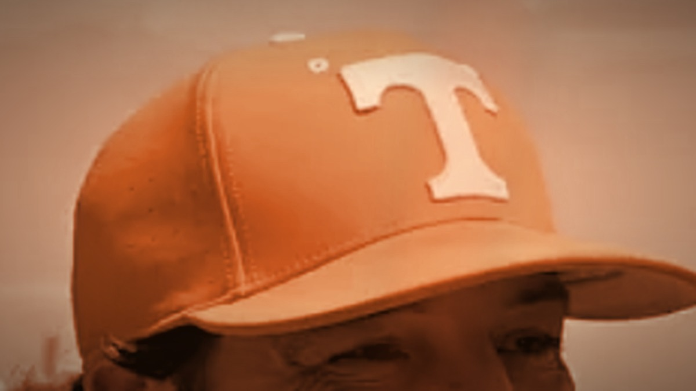
Tony Vitello Was Not Ready to Manage in the Majors, and He Told Us So Himself
"I can't talk down to these guys." That one admission explains the whole season.

Giants vs Rockies, July 10: Ray Has to Bury Colorado, and Eldridge Is the Reason to Watch
A game they have to win, and a 6-foot-7 rookie turning inside pitches into splash hits.

Rafael Devers Looks Wide Awake Again for the Giants
Another one out at Oracle Park, his 19th, and after a short cold spell the slugger looks locked in again.

The Giants Blew Another One, and It Is the Same Sickening Story
Two outs from beating the worst team in baseball, Caleb Kilian gave it all back. Rockies 4, Giants 3.

A's at White Sox, July 10: Six Straight Losses and Jacob Lopez's 7.04 ERA Walk Into Chicago
A 41-52 team on a six-game skid, a 7.04 ERA on the mound, and a clear road underdog. A preview.

Two Hall of Famers, One Job: The Montana-Young Controversy and the Trade That Split the Bay
The 49ers had two HOF quarterbacks, then traded Joe Montana. How it happened, and why they were right.
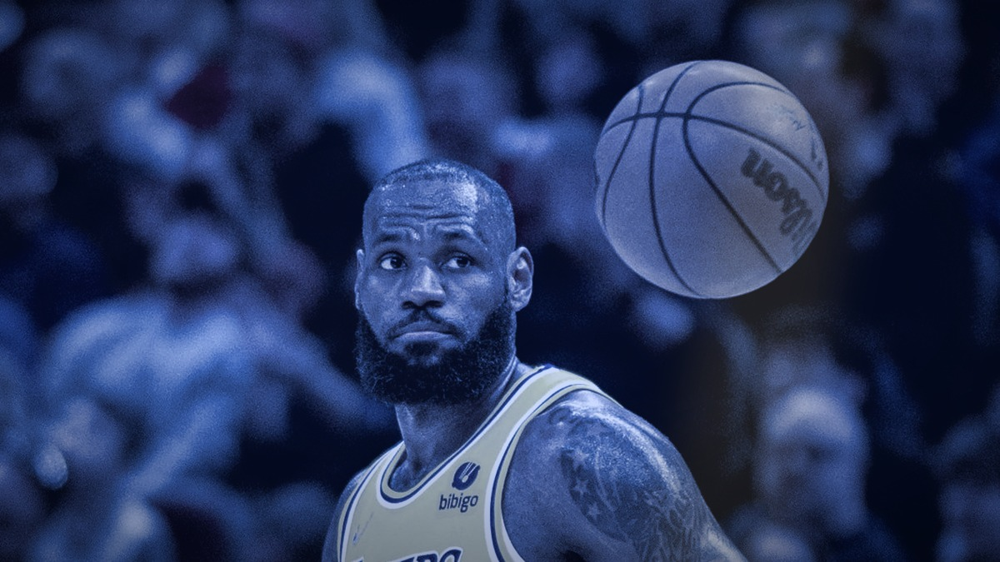
LeBron and Curry on the Same Team: What It Would Mean for Their Legacies and the NBA
LeBron is leaving L.A. and the Warriors want him next to Steph. What it would really mean.
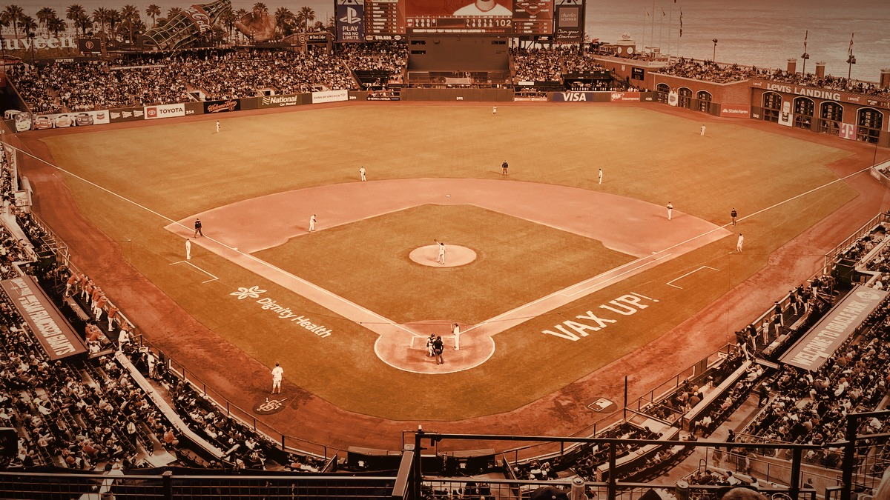
The Giants Might Actually Have Something in Carson Whisenhunt
Two starts, two wins for the rookie lefty, and three homers in an 8-2 win over Colorado.

This Giants Season Is Over. Build Around Bryce Eldridge and Explain the Bullpen.
At 35-49 and 17 back, the year is done. The future is Eldridge, and Posey's no-leverage bullpen makes no sense.

103 Wins and No October: The 1993 Pennant Race and the Salomon Torres Gamble
The last great pennant race, Dusty Baker's final-day call on a 21-year-old rookie, and the 12-1 loss that ended it.
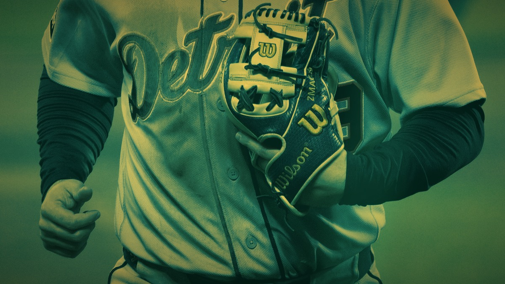
The A's Got Swept and Have Now Lost Six Straight, 4-1 to the Tigers
Valdez retired the first 11, three Tigers homers, and a rookie went deep on his first swing.

The NFL Blackballed Colin Kaepernick for Kneeling, and Everyone Knows It
It was never about talent.
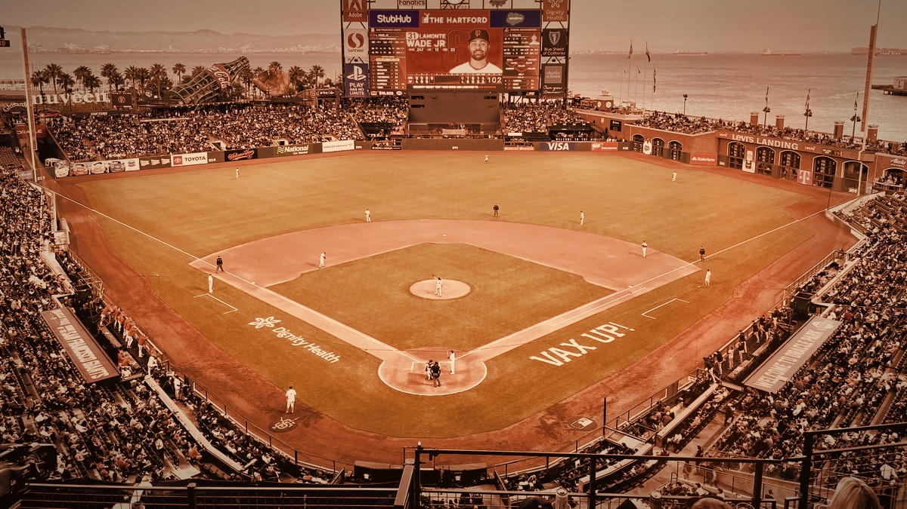
The Giants Woke Up the Worst Offense in Baseball
A quiet Blue Jays lineup found life at Oracle Park.
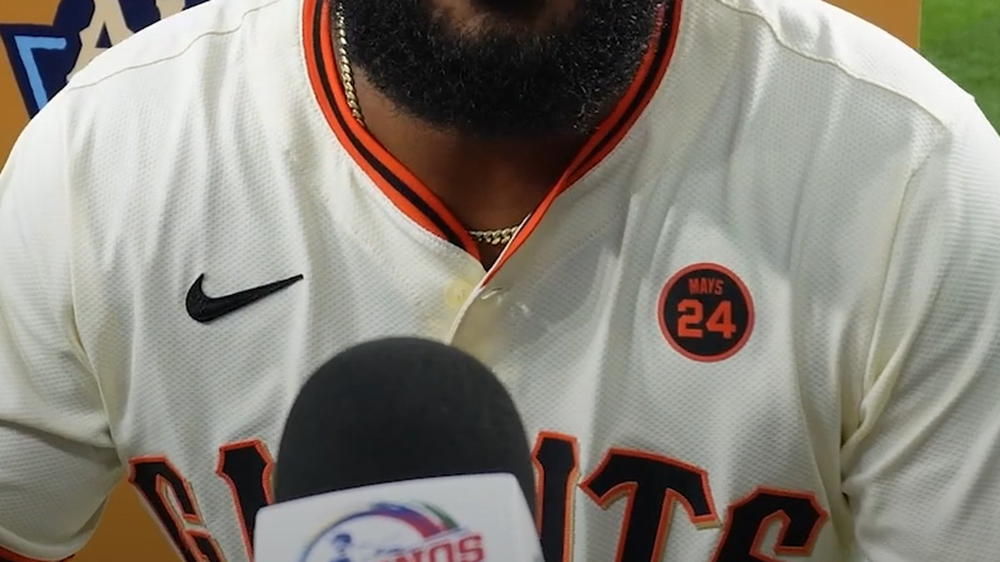
Dylan Cease Nearly No-Hit One of the Worst Giants Teams I Can Remember
Eight and a third hitless innings and a 10-0 beatdown at home.
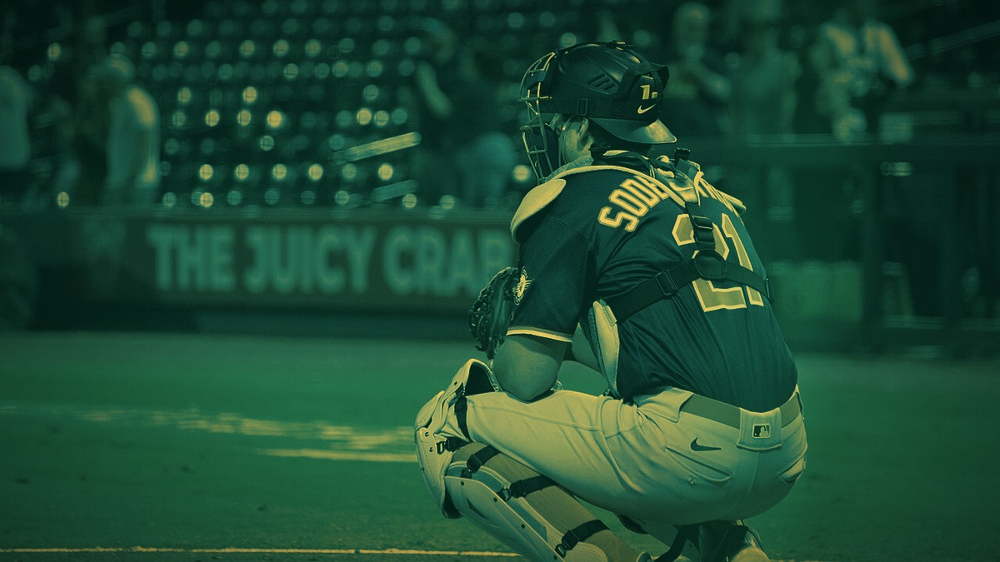
A Rookie Named Melton Made the A's Look Like a Beer-League Team, 6-1
Nine strikeouts from a kid on his sixth start.
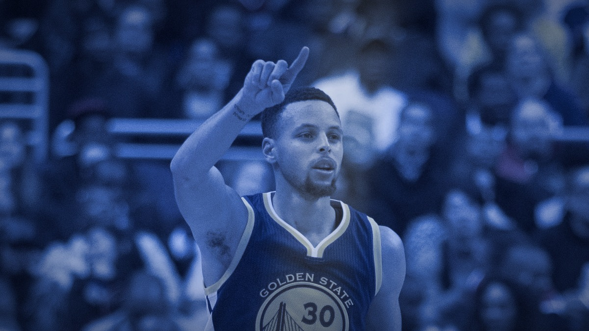
73-9: The Best Regular Season Ever, and Then They Added Durant
The greatest record ever, a crushing Finals loss, and the answer.
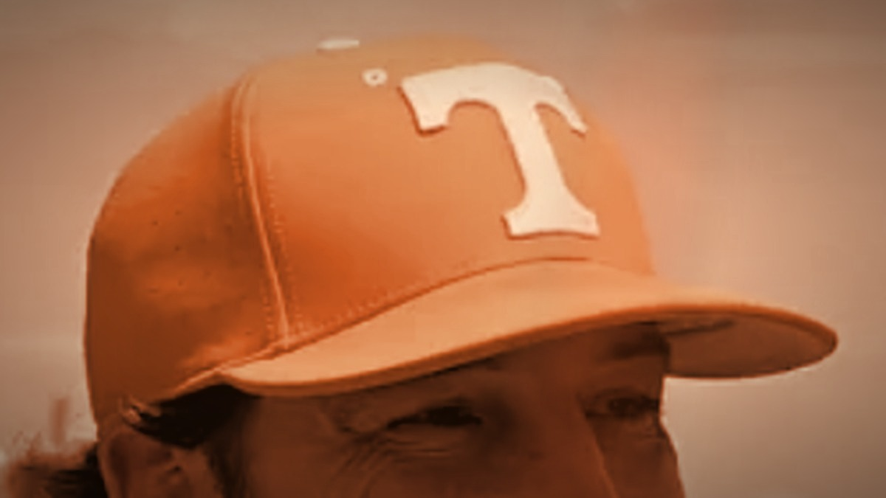
I Didn't Like the Tony Vitello Hire, and I'm Not Going to Pretend Otherwise
Bold is not the same as smart.
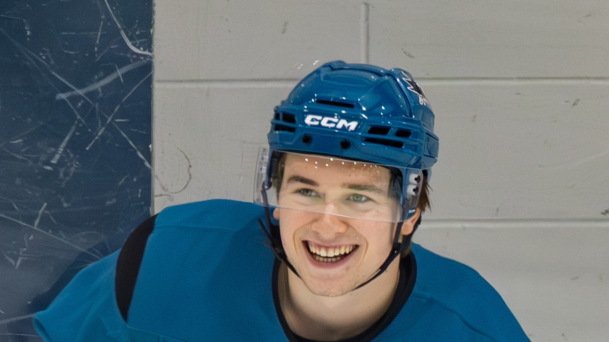
The Sharks Rebuild Finally Has a Pulse, and His Name Is Macklin Celebrini
Seven springs without playoff hockey, and suddenly the Tank matters.
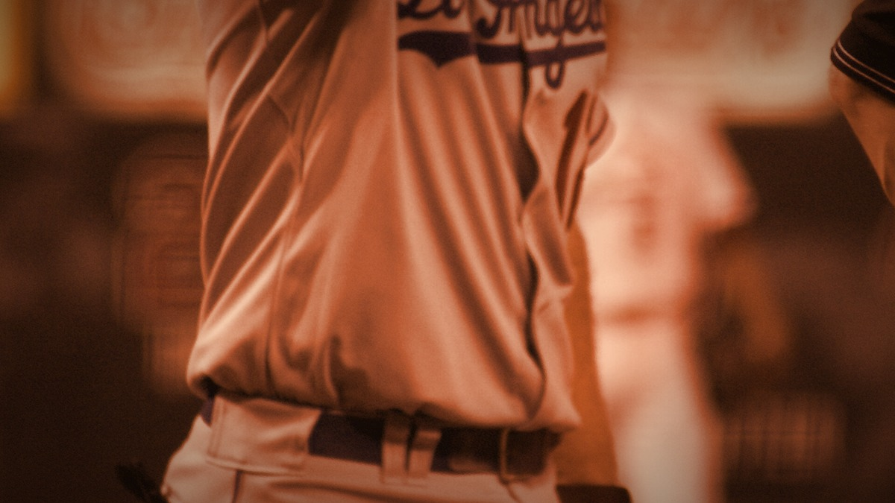
Jeff Kent: The MVP Nobody Had to Like
The best offensive second baseman of his time.

The Catch, and the Dynasty It Started
Montana to Clark at Candlestick, 1982.
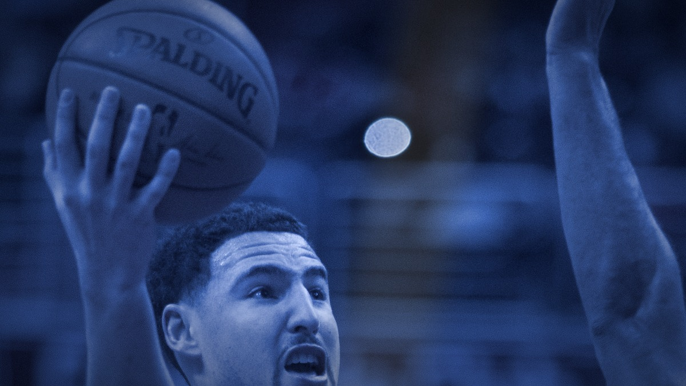
The Night Klay Thompson Scored 37 in a Quarter
Thirteen shots, thirteen makes, one quarter.
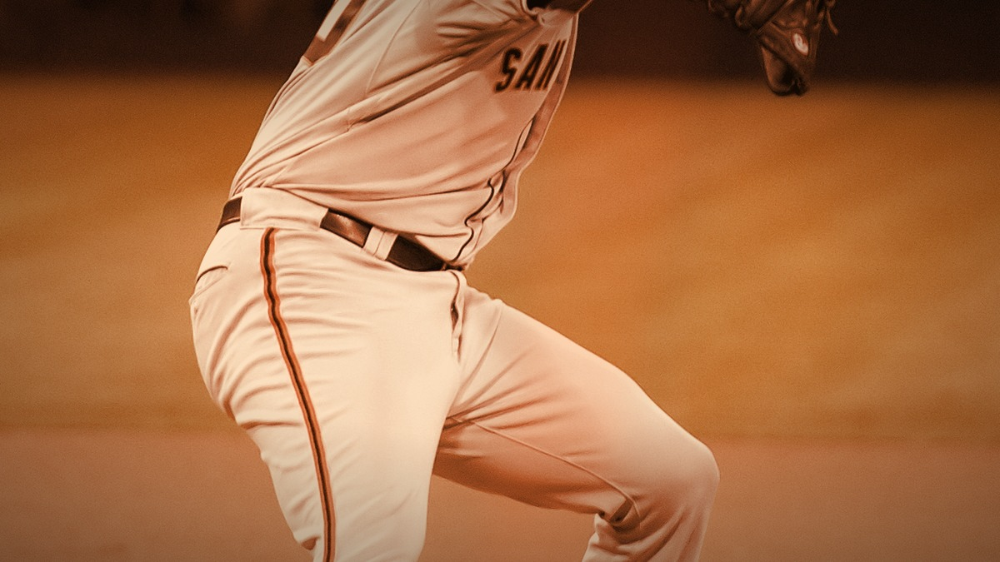
Madison Bumgarner Owned the 2014 World Series
Five scoreless to close Game 7 on two days' rest.
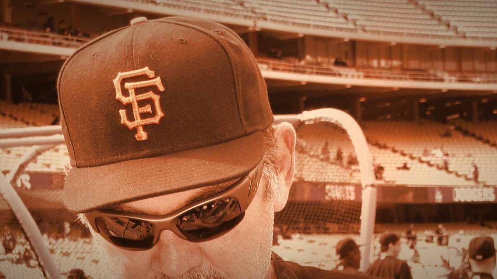
Bochy's Wizardry and the Core Four Bullpen
How close games became championships.
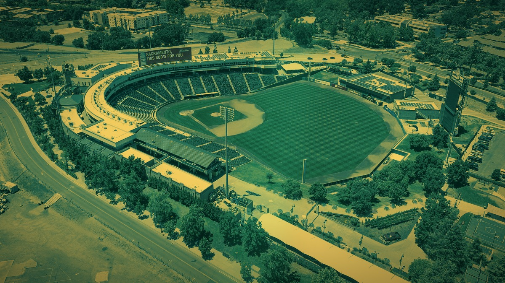
The A's Play in Sacramento Now, and That's the Whole Ugly Story
A century of Oakland baseball, boxed into a Triple-A park.

The 49ers Are Still Paying For Vegas
That overtime in Allegiant Stadium still shapes everything.
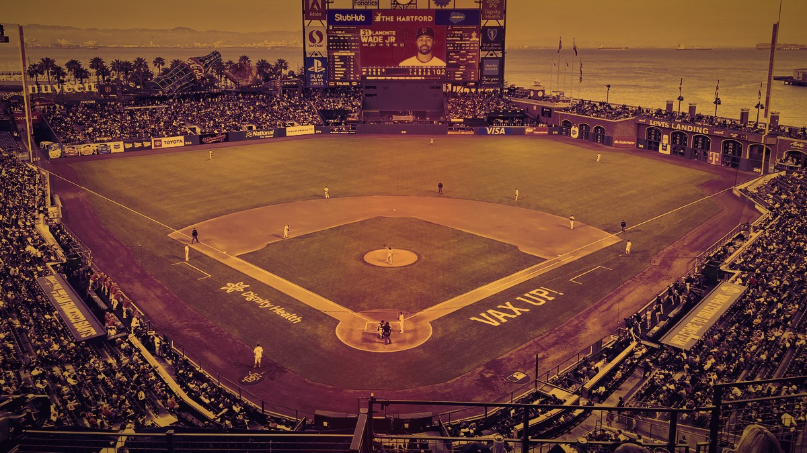
Welcome to Bay Area Sports Blog
What this blog is and why it exists.
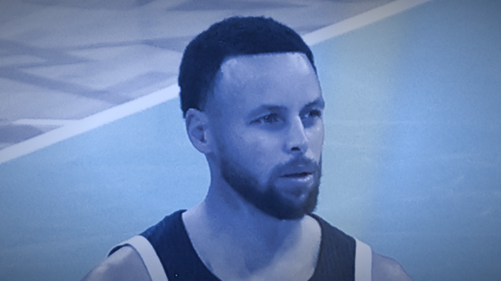
The Warriors Are Out of Easy Answers, and That's the Whole Story
The grace period the dynasty bought is finally over.